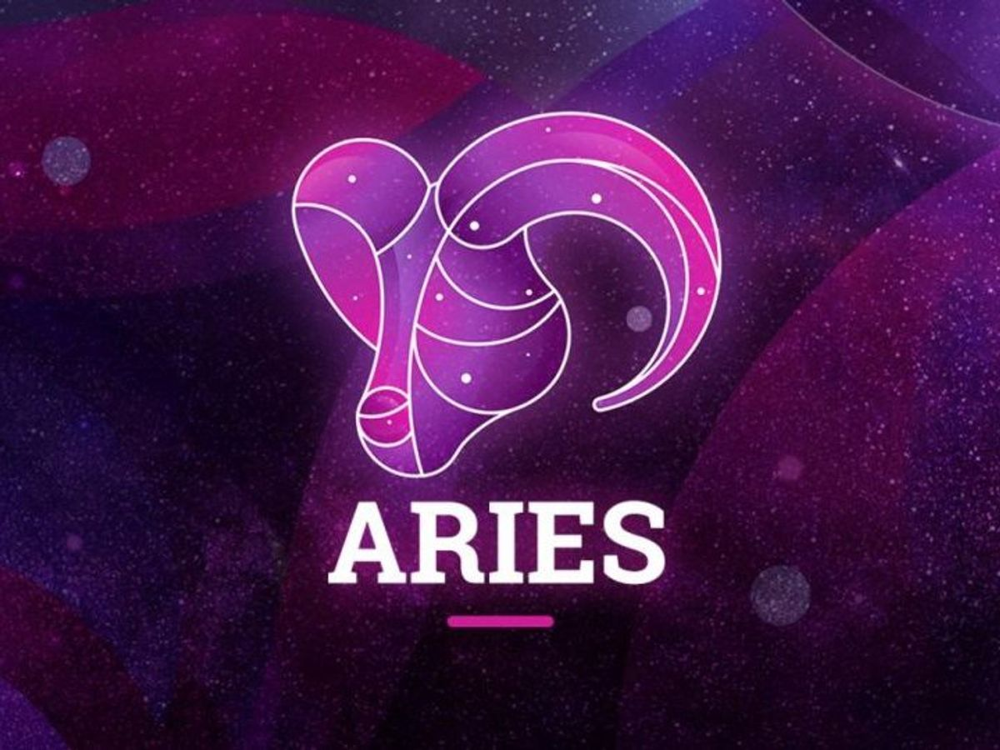
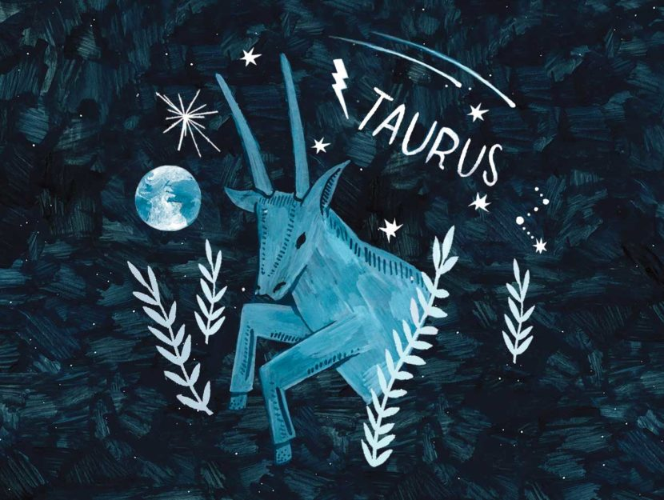
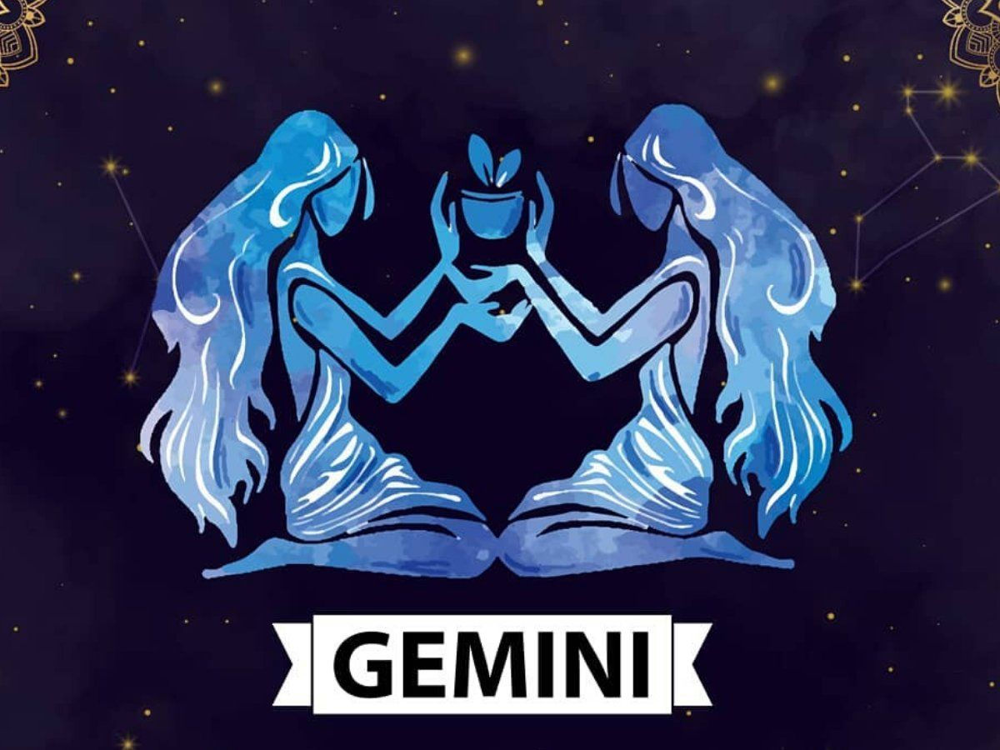
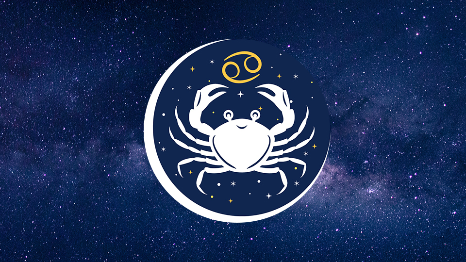
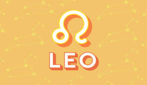
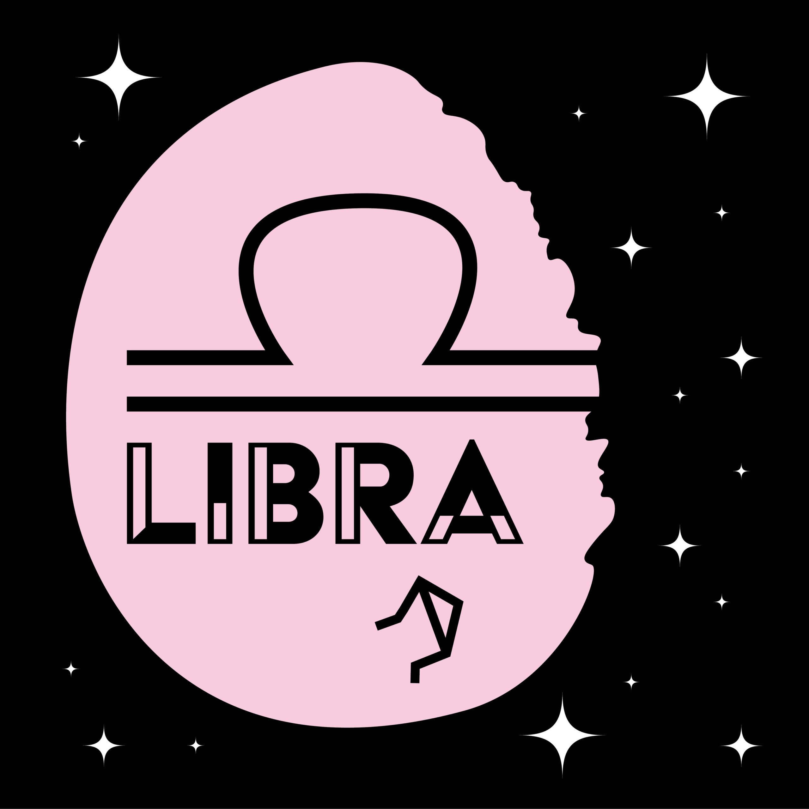
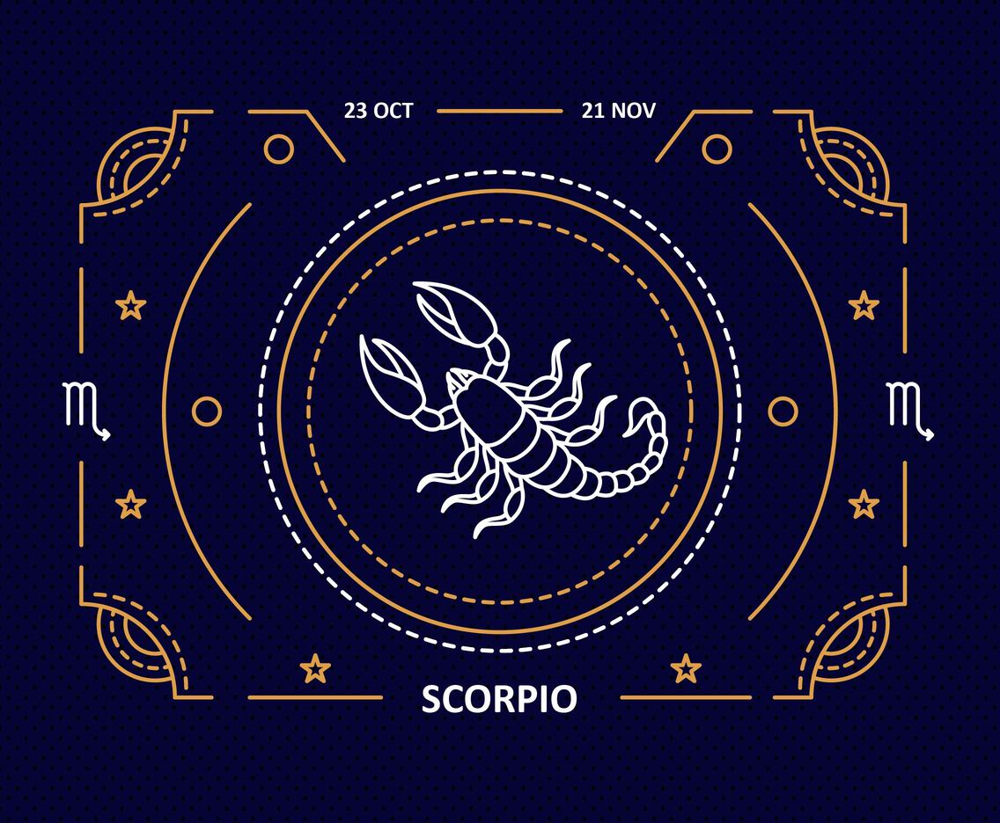
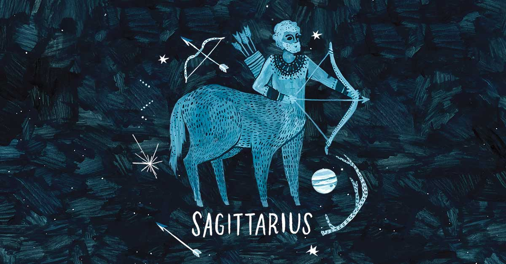
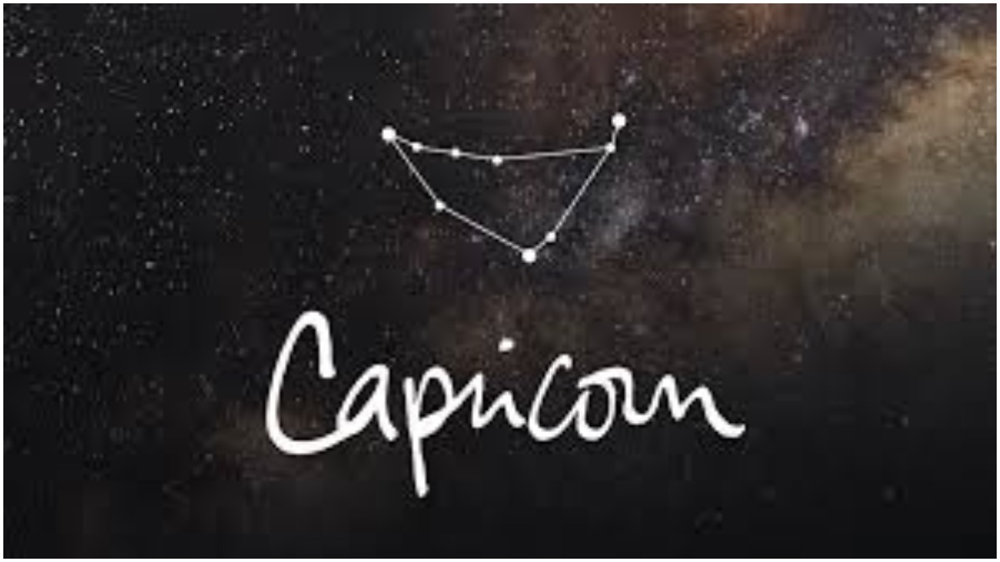

More than anything else, you need to get with the people who make you the happiest now. Even if that means going out of your way or placing an expensive phone call, you should make it happen. Connect with the folks who always have your back. Share your latest thoughts with them, and you'll get some valuable, insightful feedback. Refresh your memory about how cool people can be, and speak freely about how much you appreciate their honesty.

People may tug at you from all sides today, Pisces. No matter which way you turn, someone is there. Be patient and levelheaded. Your time will come. For now, look at these challenges as lessons for the future and learn from them. Your point of view isn't the only one in the world. It would probably be a good thing if you worked on incorporating other people's opinions into your own.
Today is a great day to check off all the items on that list of yours, Aries. Get it done. At the same time, realize that your emotions might be a bit clouded and that things that seem genuine may actually be just a mirage. Issues of a spiritual nature are of primary concern. You should make sure you're nurturing this side of your being. Think with your heart.
There's a sober feeling to the day that may leave you feeling a bit down, Taurus. There may not be any specific instance or situation that causes you to feel this way, so don't sweat it. Focus on getting your projects done. This isn't the best day to look for sympathy from others. Crank up your stereo as loud as you can and indulge in a scrumptious meal.
People may be extra stubborn today, so try to avoid any confrontations that could lead to full-scale war. Your emotions may feel restricted and restrained, Gemini. Don't sweat the small stuff. Realize that you're going through a trying period right now and that you need all the sanity you can muster. Refrain from making mountains out of molehills.
With a little help from your friends, you could work wonders, Crab! So don’t stand on ceremony if you have a few favors you can call in. Today’s supportive angle between your ruler, the moon, and powerful Pluto in your people houses could lead to some synergistic and creative collaborations—but don’t sit around waiting for them to message you. More talented people are eager to team up than you realize, but you won’t know if you don’t pursue this!
People born under the sign of Leo are natural born leaders. They are dramatic, creative, self-confident, dominant and extremely difficult to resist, able to achieve anything they want to in any area of life they commit to. There is a specific strength to a Leo and their "king of the jungle" status. Leo often has many friends for they are generous and loyal. Self-confident and attractive, this is a Sun sign capable of uniting different groups of people and leading them as one towards a shared cause, and their healthy sense of humor makes collaboration with other people even easier.

This is a major career year for your sign, Virgo. Your analytical self will enjoy the hard work and dedication it takes to make your dreams become a reality, but you also get a little boost of love from the cosmic cycles as well. You've done a lot of good deeds for so many people that it's kind of your time to let some good be returned to you as well. The only problem is sitting still and letting yourself have some fun along the way!
Wow, what a year you truly have in store for yourself, Libra! 2021 emphasizes your true gift of communication bringing out the more creative qualities of your sign. You might even consider focusing your attention on your more artistic and altruistic forms of expression. As an air sign, you find yourself on a quest for knowledge and might even consider entering a program of study that expands your understanding of various subjects.
Partnership will be extremely important to you in January and February as mighty Mars dances across the sky from you, Scorpio. The universe is telling you that you must find the right partners at this time. Teamwork and collaboration are favored above all. Scorpios in committed unions will now feel the urge to make long-term plans with their significant other. Single Scorpios will feel an intrinsic urge to date and unite with people at this time, so be sure to look now.
Curious and energetic, Sagittarius is one of the biggest travelers among all zodiac signs. Their open mind and philosophical view motivates them to wander around the world in search of the meaning of life.Sagittarius is extrovert, optimistic and enthusiastic, and likes changes. Sagittarius-born are able to transform their thoughts into concrete actions and they will do anything to achieve their goals.
With the mighty sun igniting your zodiac sign at this time, it is your birthday season! You have or will soon go through your solar return, when you can make important plans for the year ahead. Consider how you’d like to build your life, and take action to manifest your goals in the days that follow the new moon that takes place on January 12 in your zodiac sign. This provides a doorway for you to pursue some of your most heartfelt plans and desires. This luminary provides the boost you need to aim high and to soar.